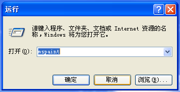

相信大家已经发现本站新增WindowsXP Luna主题了。WindowsXP是一个经典的操作系统，也是我的童年回忆，我想用现代CSS技术还原其独特的审美风格，以下是我钻研的过程，希望能给大家一点启发。
观察

这是一个标准的WindowsXP对话框，此时我正把鼠标指针放在“取消”按钮上（普通按钮的Hover状态）
我们注意到无论是主要按钮（“确定”按钮）和焦点状态的普通按钮，都具有黑蓝色的窄外边框和带有渐变光泽的内边框，那如何做出这种双层边框效果呢？
也许你会想到使用border再加outline属性，但很可惜，border